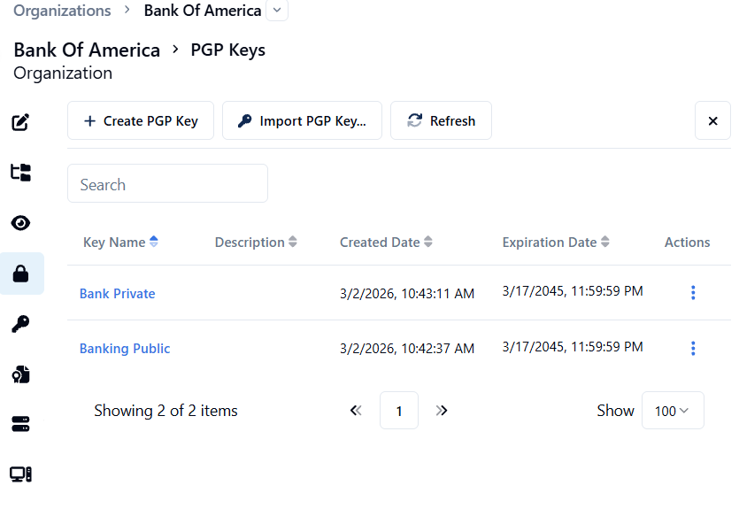
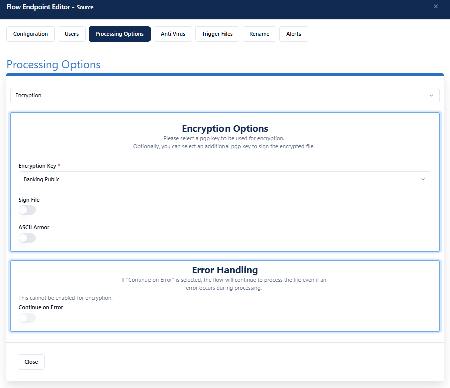
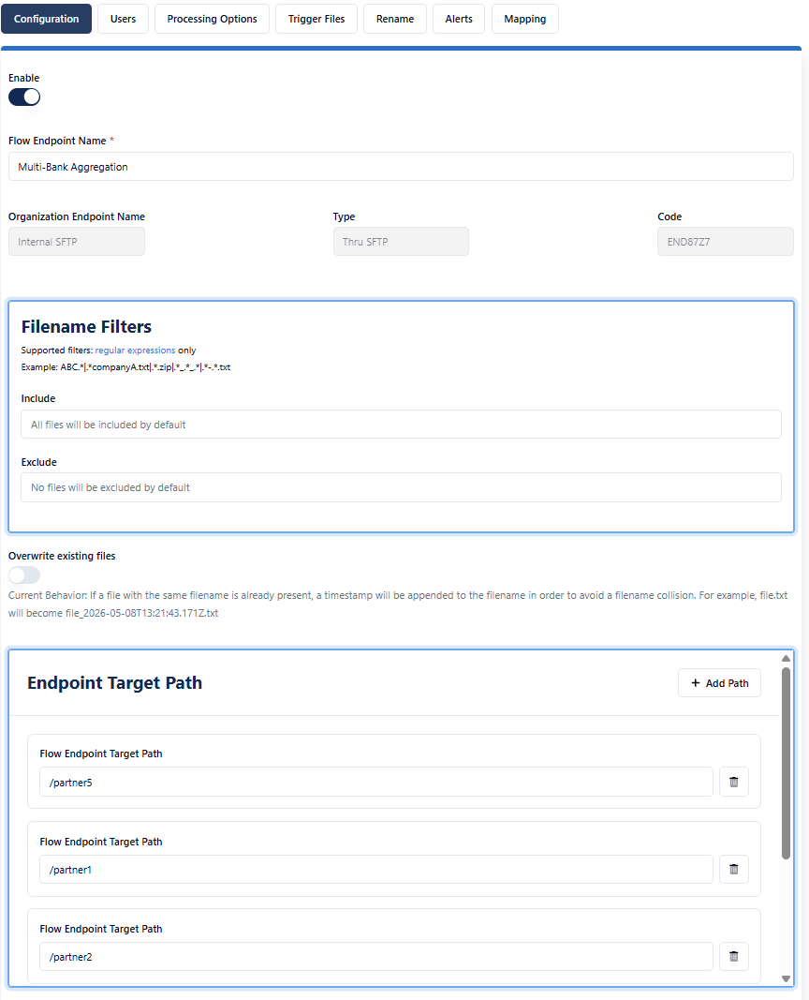
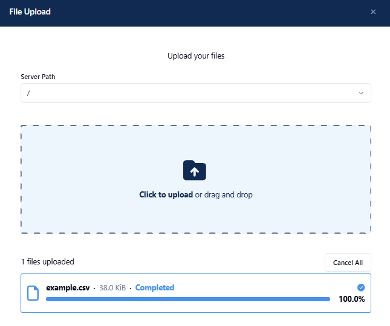
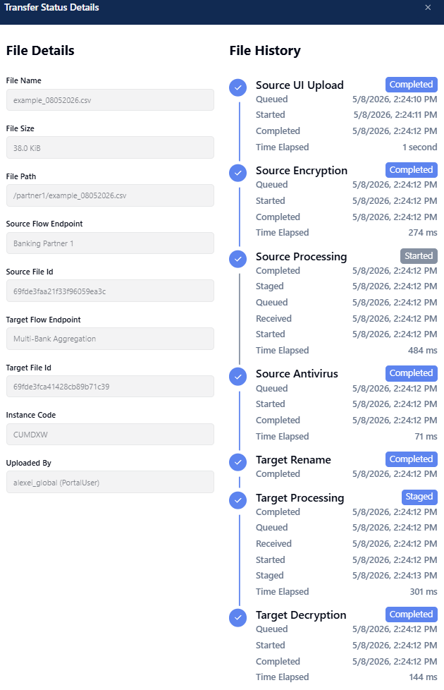

Multi-Bank Statement Aggregation
Multiple partner banks connect to a Boomi-hosted SFTP server and drop statement files. Each partner has root-level access — fully isolated, with no visibility into other partners or the target.
What This Flow Demonstrates
Multiple partner banks connect to a Boomi-hosted SFTP server and drop statement files. Each partner has root-level access — fully isolated, with no visibility into other partners or the target. Files are AV scanned on arrival, PGP encrypted per-partner, and routed to a Bank of America target with per-partner path mapping. BofA decrypts using its private key.
Key Features
- Boomi-hosted SFTP server (no infrastructure for partners to manage)
- Per-partner root-level isolation — partners cannot see each other
- PGP end-to-end encryption (partner public key on source, BofA private key on target)
- Antivirus scanning on all inbound files
- Unique SFTP user per partner
- Individual target folders per partner at Bank of America (5 paths)
Architecture
Partner Banks → SFTP push (root isolation) → Boomi MFT SFTP → AV Scan + PGP Encrypt → Flow Router (path mapping per partner) → Bank of America (Collect + Decrypt with private key)
Navigate to Organizations
Orient the prospect on what organizations represent and validate connectivity live.
-
1
From the sidebar, navigate to Organizations. Point out the variety of org types — banks, healthcare providers, automotive companies.
-
2
Start with the
_exampleorganization to show pre-configured endpoints. Click an endpoint and use Test Connection to validate live.Talking point: every partner has their own organization with dedicated endpoints, users, and keys — true multi-tenancy, not just folder separation.
Show Keys on Bank of America
Walk through asymmetric PGP encryption — a strong security talking point for banking and regulated industries.
-
1
In Organizations, open Bank of America → Keys tab.
-
2
Show the PGP public key — this is the key distributed to partner banks. They use it to encrypt files before sending.
-
3
Show the PGP private key — held exclusively by Bank of America and used for decryption after delivery.
Talking point: Bank of America holds the private key and controls where decryption happens. If they use the cloud-hosted MFT, decryption occurs in the cloud under their key. If they deploy the Boomi MFT runtime on-premise, decryption can happen at the last leg of the transfer — entirely within their own environment — so the plaintext file never leaves their infrastructure.

Open Flow 01
Inspect the source endpoint — show encryption, AV, and partner isolation all in one view.
-
1
Navigate to Flows → 01 Multi-Bank Statement Aggregation.
-
2
Click a source endpoint to open its configuration. Show the following:
- Root source path — partner-specific, isolated from all other partners
- Unique user per partner — each bank authenticates with their own credentials
- PGP encryption tab — BofA's public key attached, encrypting all inbound files
- Antivirus tab — AV scanning enabled on inbound
- Alerts tab — inactivity alert configured for this endpoint

Inspect the Target
Show the Bank of America target — path mapping, per-partner delivery folders, and decryption.
-
1
Click the Bank of America target endpoint in Flow 01.
-
2
Show the 5 target paths — one dedicated folder per partner bank. BofA receives all files but each in its own isolated directory.
-
3
Show the unique target user — BofA authenticates to pick up files with its own dedicated credentials.
-
4
Show the decryption processing option — files are automatically decrypted on arrival using BofA's private key.
-
5
Switch to the Source → Target path mapping tab. Show how each partner's source root maps to a specific target path at BofA.

Upload a Test File
Inject a real file into the flow live — the most impactful demo moment.
-
1
In the Flow 01 source list, click the Action icon next to any source endpoint → Upload Files.
-
2
Drag a small file (CSV, under 1 MB) into the upload widget.
-
3
Wait for the "Completed" status to appear in the widget before navigating away.

Review in Activity
Show the full file lifecycle in real time — the audit trail that closes security conversations.
-
1
Navigate to Activity → use the filter to select Flow: 01 Multi-Bank Statement Aggregation → Apply.
-
2
Find your uploaded file in the list. Expand the row to reveal both the source side and the target side.
-
3
Click the state badge on the entry. The lifecycle panel shows: Upload → AV Scan → PGP Encrypt → Route → Ready for Pickup.
This is the moment that closes security conversations — every step is logged, timestamped, and auditable.

Next up